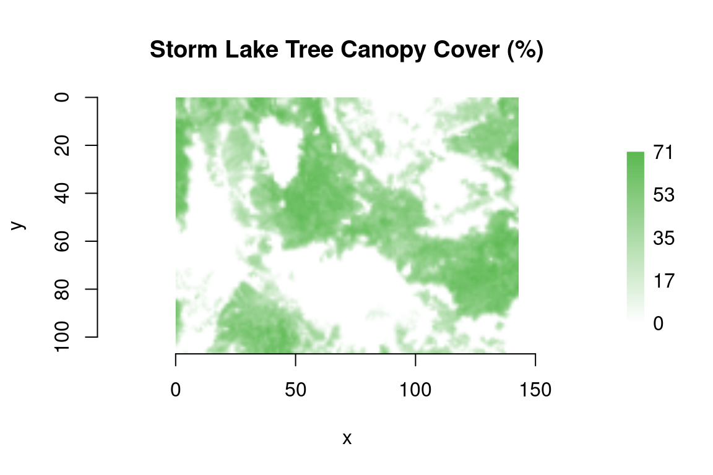

gdalraster provides bindings to the Raster API of the Geospatial Data Abstraction Library (GDAL). Using the API natively enables fast and scalable raster I/O from R. This vignette is an R port of the GDAL Raster API tutorial for C++, C and Python, (c) 1998-2023 Frank Warmerdam, Even Rouault, and others (MIT license).
Opening the file
Before opening a GDAL-supported data store it is necessary to
register drivers. There is a driver for each supported raster format.
gdalraster automatically registers drivers when the
package is loaded. A raster dataset is opened by creating a new instance
of class GDALRaster passing the name of the file and the
access desired (read_only = TRUE, or
read_only = FALSE to open with update access):
library(gdalraster)
#> GDAL 3.4.1, released 2021/12/27, PROJ 8.2.1
tcc_file <- system.file("extdata/storml_tcc.tif", package="gdalraster")
ds <- new(GDALRaster, tcc_file, read_only=TRUE)An error is returned if the dataset cannot be opened (and creation of
the GDALRaster object fails). Also, note that
filename may not actually be the name of a physical file
(though it usually is). Its interpretation is driver dependent, and it
might be a URL, a database connection string, a filename with additional
parameters, etc.
GDALRaster is a C++ class exposed directly to R (via
RCPP_EXPOSED_CLASS) that encapsulates a GDAL dataset object
and its associated raster band objects. Methods of the class are
accessed in R using the $ operator.
Getting dataset information
As described in the GDAL Raster Data Model, a GDAL dataset contains a list of raster bands, all pertaining to the same area and having the same resolution. It also has metadata, a coordinate system, a georeferencing transform, size of raster and various other information.
In the particular but common case of a “north up” raster without any rotation or shearing, the georeferencing transform (see Geotransform Tutorial) takes the following form with 1-based indexing in R:
gt <- ds$getGeoTransform()
gt[1] # x-coordinate of upper-left corner of the upper-left pixel
#> [1] 323476.1
gt[2] # pixel width (w-e resolution)
#> [1] 30
gt[3] # 0 for north-up
#> [1] 0
gt[4] # y-coordinate of upper-left corner of the upper-left pixel
#> [1] 5105082
gt[5] # 0 for north-up
#> [1] 0
gt[6] # pixel height (n-s resolution, negative value)
#> [1] -30In the general case, this is an affine transform. Class
GDALRaster also provides convenience methods for the case
of a north-up raster:
ds$bbox() # xmin, ymin, xmax, ymax
#> [1] 323476.1 5101872.0 327766.1 5105082.0
ds$res() # pixel width, pixel height as positive values
#> [1] 30 30The following code retrieves some additional information about the dataset:
# GDAL format driver
ds$getDriverShortName()
#> [1] "GTiff"
ds$getDriverLongName()
#> [1] "GeoTIFF"
# raster size in pixels, number of bands
ds$getRasterXSize()
#> [1] 143
ds$getRasterYSize()
#> [1] 107
ds$getRasterCount()
#> [1] 1
ds$dim()
#> [1] 143 107 1
# coordinate reference system as WKT string
ds$getProjectionRef()
#> [1] "PROJCS[\"NAD83 / UTM zone 12N\",GEOGCS[\"NAD83\",DATUM[\"North_American_Datum_1983\",SPHEROID[\"GRS 1980\",6378137,298.257222101,AUTHORITY[\"EPSG\",\"7019\"]],AUTHORITY[\"EPSG\",\"6269\"]],PRIMEM[\"Greenwich\",0,AUTHORITY[\"EPSG\",\"8901\"]],UNIT[\"degree\",0.0174532925199433,AUTHORITY[\"EPSG\",\"9122\"]],AUTHORITY[\"EPSG\",\"4269\"]],PROJECTION[\"Transverse_Mercator\"],PARAMETER[\"latitude_of_origin\",0],PARAMETER[\"central_meridian\",-111],PARAMETER[\"scale_factor\",0.9996],PARAMETER[\"false_easting\",500000],PARAMETER[\"false_northing\",0],UNIT[\"metre\",1,AUTHORITY[\"EPSG\",\"9001\"]],AXIS[\"Easting\",EAST],AXIS[\"Northing\",NORTH],AUTHORITY[\"EPSG\",\"26912\"]]"
# origin and pixel size from the geotransform
print(paste("Origin:", gt[1], gt[4]))
#> [1] "Origin: 323476.1 5105082"
print(paste("Pixel size:", gt[2], gt[6]))
#> [1] "Pixel size: 30 -30"Fetching a raster band
At this time access to raster data via GDAL is done one band at a
time. Also, metadata, block sizes, nodata values and various other
information are available on a per-band basis. Class
GDALRaster provides methods to access raster band objects
from the dataset (numbered 1 through ds$getRasterCount()),
by specifying a band number as the first argument:
# block size
ds$getBlockSize(band=1)
#> [1] 143 57
# data type
ds$getDataTypeName(band=1)
#> [1] "Byte"
# nodata value
ds$getNoDataValue(band=1)
#> [1] 255
# min, max, mean, sd of pixel values in the band
ds$getStatistics(band=1, approx_ok = FALSE, force = TRUE)
#> 0...10...20...30...40...50...60...70...80...90...100 - done.
#> [1] 0.00000 71.00000 23.69950 23.17744
# does this band have overviews? (aka "pyramids")
ds$getOverviewCount(band=1)
#> [1] 0
# does this band have a color table?
col_tbl <- ds$getColorTable(band=1)
if (!is.null(col_tbl))
head(col_tbl)
#> value red green blue alpha
#> [1,] 0 255 255 255 255
#> [2,] 1 252 254 252 255
#> [3,] 2 250 253 250 255
#> [4,] 3 248 252 247 255
#> [5,] 4 245 251 245 255
#> [6,] 5 243 250 242 255Reading raster data
GDALRaster$read() is a wrapper for the
GDALRasterBand::RasterIO() method in the underlying API.
This method will automatically take care of data type conversion,
up/down sampling and windowing. The following code will read the first
row of data into a similarly sized vector.
GDALRaster$read() will return data as R
integer type if possible for the raster data type (Byte,
Int8, Int16, UInt16, Int32), otherwise the returned vector will be of
type double (UInt32, Float32, Float64) or
complex (CInt16, CInt32, CFloat32, CFloat64). The returned
data are organized in left to right, top to bottom pixel order.
NA will be returned in place of the nodata value if the
raster dataset has a nodata value defined for the band:
# read the first row of pixel values
ncols <- ds$getRasterXSize()
rowdata <- ds$read(band = 1,
xoff = 0,
yoff = 0,
xsize = ncols,
ysize = 1,
out_xsize = ncols,
out_ysize = 1)
length(rowdata)
#> [1] 143
typeof(rowdata)
#> [1] "integer"
head(rowdata)
#> [1] 59 63 64 51 25 20Writing data with GDALRaster$write() is similar to
$read() with an additional argument specifying a vector of
pixel data to write (arranged in left to right, top to bottom pixel
order). The xoff, yoff, xsize,
ysize arguments describe the window of raster data on disk
to read (or write). It doesn’t have to fall on tile boundaries, though
access may be more efficient in some cases if it does. Note that GDAL
uses memory caching algorithms during raster I/O to improve performance.
The operation of the caching mechanism and configuration of cache memory
size might be considered when scaling I/O to large datasets (see GDAL
Block Cache).
The values for out_xsize and out_ysize
describe the size of the output buffer (an R vector of length
out_xsize * out_ysize that data will be read into). When
reading data at full resolution this would be the same as the window
size (xsize, ysize). However, to load a
reduced resolution overview, out_xsize,
out_ysize could be set to smaller than the window on disk.
The $read() method will perform automatic resampling as
necessary if the specified output size
(out_xsize * out_ysize) is different than the size of the
region being read (xsize * ysize). In this case, overviews
(a.k.a. “pyramids”) will be utilized to do the I/O more efficiently if
overviews are available at suitable resolution.
gdalraster::plot_raster() uses base R
graphics to display raster data read from an open dataset
(with options to display a subwindow, to read a reduced resolution
overview, or read from multiple bands for RGB data):
plot_raster(ds, legend=TRUE, main="Storm Lake Tree Canopy Cover (%)")
Closing the dataset
Calling GDALRaster$close() will result in proper
cleanup, and flushing of any pending writes. Forgetting to close a
dataset opened in update mode in a popular format like GTiff will likely
result in being unable to open it afterwards.
# close the dataset for proper cleanup
ds$close()Techniques for creating files
New files in GDAL-supported formats may be created if the format
driver supports creation. There are two general techniques for creating
files in the GDAL API, using CreateCopy() and Create(). The CreateCopy
method in R involves calling gdalraster::createCopy(),
passing in a source raster file that should be copied. The Create method
involves calling gdalraster::create(), and then explicitly
writing all the metadata and raster data with separate calls. All
drivers that support creating new files support the CreateCopy method,
but only a few support the Create method.
Consult the table of GDAL raster format drivers to determine if a particular driver supports Create or CreateCopy. Note that a number of drivers are read-only and won’t support either creation method.
Using createCopy()
gdalraster::createCopy() is simple to use as most
information is collected from the source file. It includes an argument
for passing a list of format specific creation options. It can be used
to copy a raster to a different format, and/or change options such as
the block size and arrangement, compression, various metadata, etc. The
following code copies a multi-band raster in FARSITE v.4 LCP format
(basically a raw format without support for compression or nodata
values) to LZW-compressed GeoTiff:
lcp_file <- system.file("extdata/storm_lake.lcp", package="gdalraster")
tif_file <- paste0(tempdir(), "/", "storml_lndscp.tif")
opt <- c("COMPRESS=LZW")
createCopy(format = "GTiff",
dst_filename = tif_file,
src_filename = lcp_file,
options = opt)
#> 0...10...20...30...40...50...60...70...80...90...100 - done.
file.size(lcp_file)
#> [1] 252132
file.size(tif_file)
#> [1] 108510
ds <- new(GDALRaster, tif_file, read_only=FALSE)
# band=0 for dataset-level metadata:
ds$getMetadata(band=0, domain="IMAGE_STRUCTURE")
#> [1] "COMPRESSION=LZW" "INTERLEAVE=PIXEL"
# set nodata value for all bands
for (band in 1:ds$getRasterCount())
ds$setNoDataValue(band, -9999)
# band 2 of an LCP file is slope degrees
ds$getStatistics(band=2, approx_ok=FALSE, force=TRUE)
#> 0...10...20...30...40...50...60...70...80...90...100 - done.
#> [1] 0.00000 54.00000 22.93012 12.51330
ds$close()Using create()
gdalraster::create() can be used to create a new raster
dataset manually. This function takes a list of creation options like
createCopy(), but the raster size, number of bands and band
type must be provided explicitly:
new_file <- paste0(tempdir(), "/", "newdata.tif")
create(format = "GTiff",
dst_filename = new_file,
xsize = 143,
ysize = 107,
nbands = 1,
dataType = "Int16")Once the dataset is successfully created, all appropriate metadata and raster data must be written to the file. What this includes will vary according to usage, but a simple case with a projection, geotransform and raster data is covered here:
ds <- new(GDALRaster, new_file, read_only=FALSE)
# EPSG:26912 - NAD83 / UTM zone 12N
ds$setProjection(epsg_to_wkt(26912))
#> [1] TRUE
gt <- c(323476.1, 30, 0, 5105082.0, 0, -30)
ds$setGeoTransform(gt)
#> [1] TRUE
ds$setNoDataValue(band=1, -9999)
#> [1] TRUE
ds$fillRaster(band=1, -9999, 0)
# ...
# close the dataset when done
ds$close()See also
gdalraster provides two additional functions for creating raster datasets:
rasterFromRaster()creates a new raster with spatial reference, extent and resolution taken from a template raster, without copying data. It optionally changes the format, number of bands, data type and nodata value, sets driver-specific dataset creation options, and initializes to a value.rasterToVRT()creates a virtual raster dataset (VRT) derived from a source raster with options for virtual subsetting, virtually resampling the source data at a different pixel resolution, or applying a virtual kernel filter.
Data sources
The example datasets are National Land Cover Database (NLCD) Tree Canopy Cover (TCC v2021.4) from the USDA Forest Service (https://data.fs.usda.gov/geodata/rastergateway/treecanopycover/), and a multi-band FARSITE landscape file describing terrain, vegetation and wildland fuels from the LANDFIRE Program (LF 2020 version, https://landfire.gov/).